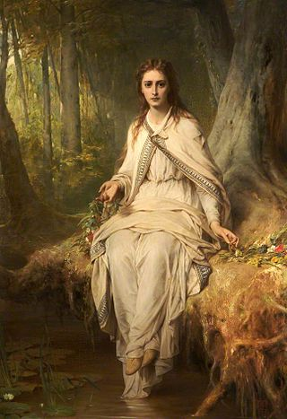
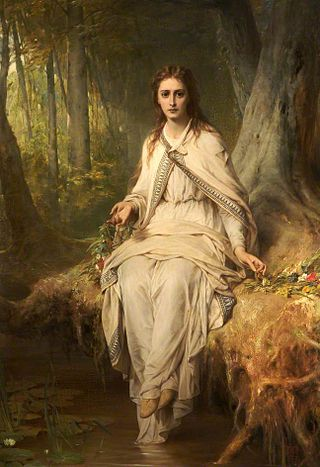

Saxo Grammaticus био је историчар који је написао дело ''Gesta Danorum'' ком је записана до тада позната историја Данске. У њему се налази Скандинавска легенда у којој је главни лик принц Амлет, који се сматра Шекспировом инспирацијом за креирање Хамлетовог лика. Такође, идеја драме је био тежак живот Данске породице. Шекспир је кроз ово дело покушао да нам прикаже тежак и веома компликован живот данских породица на дворовима, који су по већ давним изворима из Данске историје ништа другачији него пре. Сматра се да је дело написано 1601. или 1602. године.
"Хамлет" је трагедија освете која се заснива на томе да је изведе главни јунак. Радња се одвија у дворцу Helisngöru у Данској. Хамлет покушава да се освети злочинцу који је учинио злодело али му то не успева.Насупрот решењу јављају се компликације у самој драми које доводе до развијања радњи које немају везе са самом тематиком ове трагедије. Хамлет осећа дужност да освети убијеног оца, али због неуспелих покушаја он запада у стање лудила. Занимљиво је то што ми током целе драме не знамо да ли је то лудило стварно или део Хамлетовог осветничког плана. Хамлетову идеју освете ремети то што је његов стриц на високом положају и што Хамлету треба чврст доказ да потврди своју сумњу. За њега никад није био прави тренутак да изврши убиство. Сплетом околности на самом крају дела осветник гине или извршава самоубиство а заједно са њим умиру све важне личности у трагедији.
Шекспирове трагедије су упоредиве са трагедијама античког доба. Класична (античка) драма има три јединства, којих се често Шекспир придржава. Међутим, у "Хамлету" поштује само јединство радње у којем су догађаји повезани и произилазе један из другог. У овој драми Хамлет је главни јунак а Лаерт њему супротстављен лик што се поклапа са протагонистом и антагонистом античког периода. Хамлет и Леарт су ликови који су замишљени да представљају супротност карактера. Одрасли су заједно, и самим тим су били веома блиски али су их путеви живота раздвојили.Они имају веома мало сличности, а то су губитак и патња за очевима, као и љубав према Офелији. Оба лика жале смрт очева на неки свој начин, али и деле жудњу за осветом. Леарт је све оно што би Хамлет био да га његове сопствене мисли нису заслепиле. Хамлет је трагичан јунак који је све своје квлитете оставио по страни да би пресуђивао људима који крше моралбе законе, несвесно одбацујући могућност да и сам чини лоша дела. Још једна одлика античке трагедије се огледа у драмском сукобу који покрће радњу. Он може бити између два јунака, између јунака и друштва, али и унутар самог јунака. Хамлет је учествовао у све три врсте таквих сукоба.

 

Страницу урадила ©Уна Зорић, Гимназија"20.октобар" Бачка Паланка